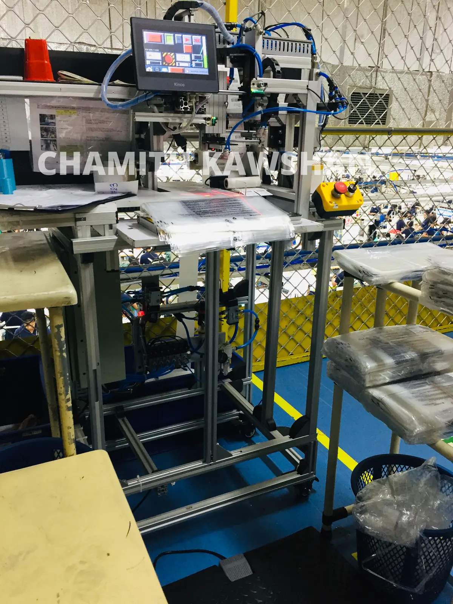

01



MACHINE DESIGN · PLC/HMI · VISION
Polybag Label
Pasting Machine
Led the design and development from concept to commissioning. The production system aligns polybags and applies labels consistently; Phase II advances it into a fully automatic, camera-guided platform using calibrated industrial imaging and Python/OpenCV.
1.5 scycle saving
9,000operations/day
3machines deployed
SolidWorksOpenCVPLCHMIPneumatics

 8× SERVO
8× SERVO
 TEST IN MINUTES
TEST IN MINUTES
 AUTOMATED SEQUENCE
AUTOMATED SEQUENCE